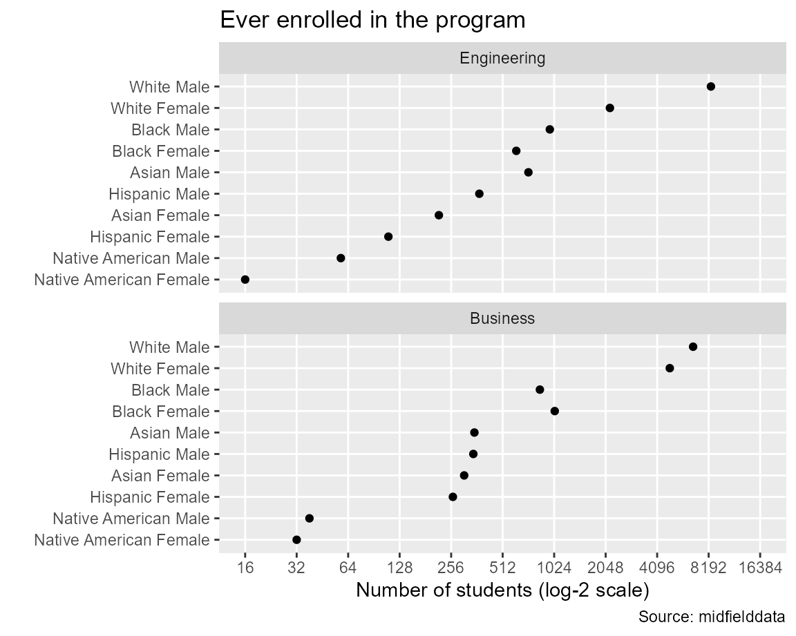

In the midfielddata sample, the programs with the greatest numbers of students are Business and Engineering. In this vignette, we compare the number of students ever enrolled in these programs, grouped by sex and race/ethnicity.
We use midfieldr functions to access midfielddata student records. We condition, group and summarize the data, and graph a result. For data carpentry, we use base R and selected syntax from the data.table package.
midfieldr functions
packages
# packages used
library(midfieldr)
library(midfielddata)
library(data.table)
library(ggplot2)
# print max 20 rows, otherwise 10 rows each head/tail
options(datatable.print.nrows = 20, datatable.print.topn = 10)Instructional programs are encoded by a 6-digit CIP code. filter_text() accesses the cip data set and retrieves all the 6-digit codes that satisfy stated conditions. In this case, we want all codes that start with 14 (engineering) and 52 (business).
# engineering
engineering <- filter_text(cip, keep_text = "^14", keep_col = "cip6")
# add program label
engineering[, program := "Engineering"]
# examine the result
engineering[order(cip6)]
#> cip6 program
#> 1: 140101 Engineering
#> 2: 140102 Engineering
#> 3: 140201 Engineering
#> 4: 140301 Engineering
#> 5: 140401 Engineering
#> 6: 140501 Engineering
#> 7: 140601 Engineering
#> 8: 140701 Engineering
#> 9: 140702 Engineering
#> 10: 140799 Engineering
#> ---
#> 47: 143901 Engineering
#> 48: 144001 Engineering
#> 49: 144101 Engineering
#> 50: 144201 Engineering
#> 51: 144301 Engineering
#> 52: 144401 Engineering
#> 53: 144501 Engineering
#> 54: 149999 Engineering
#> 55: 14XXXX Engineering
#> 56: 14YYYY EngineeringRepeat for business.
# business
business <- filter_text(cip, keep_text = "^52", keep_col = "cip6")
# add program label
business[, program := "Business"]
# examine the result
business[order(cip6)]
#> cip6 program
#> 1: 520101 Business
#> 2: 520201 Business
#> 3: 520202 Business
#> 4: 520203 Business
#> 5: 520204 Business
#> 6: 520205 Business
#> 7: 520206 Business
#> 8: 520207 Business
#> 9: 520208 Business
#> 10: 520209 Business
#> ---
#> 85: 521905 Business
#> 86: 521906 Business
#> 87: 521907 Business
#> 88: 521908 Business
#> 89: 521909 Business
#> 90: 521910 Business
#> 91: 521999 Business
#> 92: 522001 Business
#> 93: 522101 Business
#> 94: 529999 BusinessBind the two data frames.
# bind the two data frames
program_group <- rbind(engineering, business)
# examine the result
program_group[order(cip6)]
#> cip6 program
#> 1: 140101 Engineering
#> 2: 140102 Engineering
#> 3: 140201 Engineering
#> 4: 140301 Engineering
#> 5: 140401 Engineering
#> 6: 140501 Engineering
#> 7: 140601 Engineering
#> 8: 140701 Engineering
#> 9: 140702 Engineering
#> 10: 140799 Engineering
#> ---
#> 141: 521905 Business
#> 142: 521906 Business
#> 143: 521907 Business
#> 144: 521908 Business
#> 145: 521909 Business
#> 146: 521910 Business
#> 147: 521999 Business
#> 148: 522001 Business
#> 149: 522101 Business
#> 150: 529999 BusinessWe extract the cip6 column as a character vector to use later to extract student data by their CIP codes.
# extract a vector of 6-digit CIP codes
group_cip <- program_group$cip6
# examine the result
str(group_cip)
#> chr [1:150] "140101" "140102" "140201" "140301" "140401" "140501" "140601" ...Related vignettes
filter_text() and program labeling optionsWe access midfieldterms to obtain the IDs of all students ever enrolled in these programs.
# extract students ever enrolled from terms data
cols_we_want <- c("id", "cip6")
rows_we_want <- midfieldterms$cip6 %in% group_cip
enrollees <- midfieldterms[rows_we_want, ..cols_we_want]
enrollees <- unique(enrollees)
# examine the result
enrollees[order(id)]
#> id cip6
#> 1: MID25783135 520101
#> 2: MID25783162 14XXXX
#> 3: MID25783162 520301
#> 4: MID25783162 521401
#> 5: MID25783166 14XXXX
#> 6: MID25783167 14XXXX
#> 7: MID25783167 140901
#> 8: MID25783178 14XXXX
#> 9: MID25783178 140701
#> 10: MID25783178 143501
#> ---
#> 50956: MID26697447 140701
#> 50957: MID26697447 141001
#> 50958: MID26697449 520201
#> 50959: MID26697449 521003
#> 50960: MID26697471 520201
#> 50961: MID26697484 521401
#> 50962: MID26697576 520301
#> 50963: MID26697576 521401
#> 50964: MID26697599 521201
#> 50965: MID26697685 521201There may be students matriculating in our programs who do not appear in the terms data. To account for these students, we apply a similar process to midfieldstudents.
# extract students from matriculant data
rows_we_want <- midfieldstudents$cip6 %in% group_cip
matriculants <- midfieldstudents[rows_we_want, ..cols_we_want]Combine the data frames and remove duplicates.
# combine findings
enrollees <- rbind(enrollees, matriculants)
enrollees <- unique(enrollees)
# examine the result
enrollees[order(id)]
#> id cip6
#> 1: MID25783135 520101
#> 2: MID25783162 14XXXX
#> 3: MID25783162 520301
#> 4: MID25783162 521401
#> 5: MID25783166 14XXXX
#> 6: MID25783167 14XXXX
#> 7: MID25783167 140901
#> 8: MID25783178 14XXXX
#> 9: MID25783178 140701
#> 10: MID25783178 143501
#> ---
#> 52543: MID26697449 521003
#> 52544: MID26697471 520201
#> 52545: MID26697484 521401
#> 52546: MID26697484 521099
#> 52547: MID26697576 520301
#> 52548: MID26697576 521401
#> 52549: MID26697599 521201
#> 52550: MID26697623 520301
#> 52551: MID26697641 521201
#> 52552: MID26697685 521201For some of these students, completing their program may not be feasible given the range of data available. subset_feasible() subsets the enrollees IDs, retaining those who matriculate at least six years before the last term in the data.
# apply the feasible completion filter
feasible_ids <- subset_feasible(enrollees$id)
# subset the enrollees
rows_we_want <- enrollees$id %in% feasible_ids
enrollees <- enrollees[rows_we_want]
# examine the result
enrollees[order(id)]
#> id cip6
#> 1: MID25783135 520101
#> 2: MID25783162 14XXXX
#> 3: MID25783162 520301
#> 4: MID25783162 521401
#> 5: MID25783178 14XXXX
#> 6: MID25783178 140701
#> 7: MID25783178 143501
#> 8: MID25783195 521401
#> 9: MID25783197 14XXXX
#> 10: MID25783197 140701
#> ---
#> 40981: MID26697447 141001
#> 40982: MID26697449 520201
#> 40983: MID26697449 521003
#> 40984: MID26697471 520201
#> 40985: MID26697484 521401
#> 40986: MID26697484 521099
#> 40987: MID26697576 520301
#> 40988: MID26697576 521401
#> 40989: MID26697599 521201
#> 40990: MID26697623 520301Related vignettes
In this example, the results are eventually grouped by program, race/ethnicity, and sex. Here, we join these variables to the working data frame.
We access midfieldstudents to obtain students’ race/ethnicity and sex as self-reported at matriculation.
rows_we_want <- midfieldstudents$id %in% feasible_ids
cols_we_want <- c("id", "race", "sex")
race_sex <- midfieldstudents[rows_we_want, ..cols_we_want]
race_sex <- unique(race_sex)
# examine the result
race_sex[order(id)]
#> id race sex
#> 1: MID25783135 White Male
#> 2: MID25783162 White Male
#> 3: MID25783178 Black Male
#> 4: MID25783195 White Male
#> 5: MID25783197 White Male
#> 6: MID25783227 White Male
#> 7: MID25783259 White Male
#> 8: MID25783306 White Female
#> 9: MID25783360 White Male
#> 10: MID25783388 White Male
#> ---
#> 28675: MID26697355 Hispanic Female
#> 28676: MID26697367 Hispanic Male
#> 28677: MID26697444 White Male
#> 28678: MID26697447 Asian Male
#> 28679: MID26697449 White Female
#> 28680: MID26697471 Black Female
#> 28681: MID26697484 White Female
#> 28682: MID26697576 Asian Male
#> 28683: MID26697599 White Male
#> 28684: MID26697623 Black FemaleJoin the race/ethnicity and sex data frame to the enrollees data frame by id. Then join the program names from program_group to our working data frame by cip6.
# left-join demographics to enrollees
enrollees <- merge(enrollees, race_sex, by = "id", all.x = TRUE)
# left-join program_group to enrollees
enrollees <- merge(enrollees, program_group, by = "cip6", all.x = TRUE)
# examine the result
enrollees[order(id)]
#> cip6 id race sex program
#> 1: 520101 MID25783135 White Male Business
#> 2: 14XXXX MID25783162 White Male Engineering
#> 3: 520301 MID25783162 White Male Business
#> 4: 521401 MID25783162 White Male Business
#> 5: 140701 MID25783178 Black Male Engineering
#> 6: 143501 MID25783178 Black Male Engineering
#> 7: 14XXXX MID25783178 Black Male Engineering
#> 8: 521401 MID25783195 White Male Business
#> 9: 140701 MID25783197 White Male Engineering
#> 10: 140801 MID25783197 White Male Engineering
#> ---
#> 40981: 141001 MID26697447 Asian Male Engineering
#> 40982: 520201 MID26697449 White Female Business
#> 40983: 521003 MID26697449 White Female Business
#> 40984: 520201 MID26697471 Black Female Business
#> 40985: 521099 MID26697484 White Female Business
#> 40986: 521401 MID26697484 White Female Business
#> 40987: 520301 MID26697576 Asian Male Business
#> 40988: 521401 MID26697576 Asian Male Business
#> 40989: 521201 MID26697599 White Male Business
#> 40990: 520301 MID26697623 Black Female BusinessHere we edit one last time by deleting the CIP column and removing duplicates. In this way, students who migrate within engineering, for example, are not counted twice, but a student who transfers from engineering to business (or vice versa) is counted in both programs.
# remove the CIP codes
enrollees[, cip6 := NULL]
# remove duplicates
enrollees <- unique(enrollees)
# examine the result
enrollees[order(id)]
#> id race sex program
#> 1: MID25783135 White Male Business
#> 2: MID25783162 White Male Engineering
#> 3: MID25783162 White Male Business
#> 4: MID25783178 Black Male Engineering
#> 5: MID25783195 White Male Business
#> 6: MID25783197 White Male Engineering
#> 7: MID25783227 White Male Engineering
#> 8: MID25783259 White Male Engineering
#> 9: MID25783306 White Female Business
#> 10: MID25783360 White Male Business
#> ---
#> 30153: MID26697355 Hispanic Female Business
#> 30154: MID26697367 Hispanic Male Engineering
#> 30155: MID26697444 White Male Engineering
#> 30156: MID26697447 Asian Male Engineering
#> 30157: MID26697449 White Female Business
#> 30158: MID26697471 Black Female Business
#> 30159: MID26697484 White Female Business
#> 30160: MID26697576 Asian Male Business
#> 30161: MID26697599 White Male Business
#> 30162: MID26697623 Black Female BusinessTo frame our results in terms of program, race/ethnicity, and sex, we group by these variables and count the number of students in each grouping using syntax from the data.table package. The count is assigned to the new ever column.
# assign
grouping_variables <- c("program", "race", "sex")
# aggregate using data.table syntax
grouped_enrollees <- enrollees[, .(ever = .N), by = grouping_variables]
# examine the result
grouped_enrollees
#> program race sex ever
#> 1: Engineering Other Male 165
#> 2: Engineering White Female 2230
#> 3: Engineering Asian Male 734
#> 4: Engineering White Male 8729
#> 5: Engineering Black Female 628
#> 6: Engineering Hispanic Female 115
#> 7: Engineering Asian Female 217
#> 8: Engineering Native American Male 60
#> 9: Engineering Black Male 987
#> 10: Engineering Hispanic Male 379
#> ---
#> 23: Business Asian Female 308
#> 24: Business Other Female 81
#> 25: Business International Female 61
#> 26: Business Hispanic Male 348
#> 27: Business Unknown Female 50
#> 28: Business Hispanic Female 264
#> 29: Business Unknown Male 55
#> 30: Business International Male 106
#> 31: Business Native American Female 33
#> 32: Business Native American Male 41To prepare the results for graphing, we construct a “pre-multiway” version of the data frame. We begin by removing ambiguous levels of race/ethnicity.
# initialize the pre-multiway data frame
pre_mw <- copy(grouped_enrollees)
# remove ambiguous levels of race/ethnicity
rows_we_want <- !pre_mw$race %in% c("Unknown", "International", "Other")
pre_mw <- pre_mw[rows_we_want]
# examine the result
unique(pre_mw$race)
#> [1] "White" "Asian" "Black" "Hispanic"
#> [5] "Native American"To protect confidentiality, we omit observations with 10 or fewer students ever enrolled.
# protect confidentiality of small populations
rows_we_want <- pre_mw$ever > 10
pre_mw <- pre_mw[rows_we_want]
# order rows for viewing
pre_mw <- pre_mw[order(program, race, sex)]
# examine the result
pre_mw
#> program race sex ever
#> 1: Business Asian Female 308
#> 2: Business Asian Male 353
#> 3: Business Black Female 1047
#> 4: Business Black Male 854
#> 5: Business Hispanic Female 264
#> 6: Business Hispanic Male 348
#> 7: Business Native American Female 33
#> 8: Business Native American Male 41
#> 9: Business White Female 4977
#> 10: Business White Male 6785
#> 11: Engineering Asian Female 217
#> 12: Engineering Asian Male 734
#> 13: Engineering Black Female 628
#> 14: Engineering Black Male 987
#> 15: Engineering Hispanic Female 115
#> 16: Engineering Hispanic Male 379
#> 17: Engineering Native American Female 16
#> 18: Engineering Native American Male 60
#> 19: Engineering White Female 2230
#> 20: Engineering White Male 8729In intersectional studies, we have found combined race/ethnicity and sex to be a useful category. We unite two columns to create the race_sex column.
# create a new category
pre_mw[, race_sex := paste(race, sex, sep = " ")]
# examine the result
pre_mw
#> program race sex ever race_sex
#> 1: Business Asian Female 308 Asian Female
#> 2: Business Asian Male 353 Asian Male
#> 3: Business Black Female 1047 Black Female
#> 4: Business Black Male 854 Black Male
#> 5: Business Hispanic Female 264 Hispanic Female
#> 6: Business Hispanic Male 348 Hispanic Male
#> 7: Business Native American Female 33 Native American Female
#> 8: Business Native American Male 41 Native American Male
#> 9: Business White Female 4977 White Female
#> 10: Business White Male 6785 White Male
#> 11: Engineering Asian Female 217 Asian Female
#> 12: Engineering Asian Male 734 Asian Male
#> 13: Engineering Black Female 628 Black Female
#> 14: Engineering Black Male 987 Black Male
#> 15: Engineering Hispanic Female 115 Hispanic Female
#> 16: Engineering Hispanic Male 379 Hispanic Male
#> 17: Engineering Native American Female 16 Native American Female
#> 18: Engineering Native American Male 60 Native American Male
#> 19: Engineering White Female 2230 White Female
#> 20: Engineering White Male 8729 White MaleMultiway data are characterized by two categorical variables and one quantitative variable (Cleveland, 1993). In this example, the two categories are program and race/ethnicity/sex and the quantitative variable is the number of students ever enrolled.
To structure the data in multiway form, we select the three multiway variables.
# select the three multiway variables
cols_we_want <- c("program", "race_sex", "ever")
pre_mw <- pre_mw[, ..cols_we_want]
# examine the result
pre_mw
#> program race_sex ever
#> 1: Business Asian Female 308
#> 2: Business Asian Male 353
#> 3: Business Black Female 1047
#> 4: Business Black Male 854
#> 5: Business Hispanic Female 264
#> 6: Business Hispanic Male 348
#> 7: Business Native American Female 33
#> 8: Business Native American Male 41
#> 9: Business White Female 4977
#> 10: Business White Male 6785
#> 11: Engineering Asian Female 217
#> 12: Engineering Asian Male 734
#> 13: Engineering Black Female 628
#> 14: Engineering Black Male 987
#> 15: Engineering Hispanic Female 115
#> 16: Engineering Hispanic Male 379
#> 17: Engineering Native American Female 16
#> 18: Engineering Native American Male 60
#> 19: Engineering White Female 2230
#> 20: Engineering White Male 8729The second attribute of multiway data is that the levels of the categories are ordered by the median value of the quantitative variable. prepare_multiway() converts the categorical variables to factors and orders the category levels.
# order the category levels
data_mw <- prepare_multiway(pre_mw)The median values are attributes of the data frame. We can view them as follows. Note that program and race_sex are now factors ordered by the median enrolled numbers (recorded under the scores attribute).
lapply(data_mw, FUN = attributes)
#> $program
#> $program$levels
#> [1] "Business" "Engineering"
#>
#> $program$class
#> [1] "factor"
#>
#> $program$scores
#> Business Engineering
#> 350.5 503.5
#>
#>
#> $race_sex
#> $race_sex$levels
#> [1] "Native American Female" "Native American Male" "Hispanic Female"
#> [4] "Asian Female" "Hispanic Male" "Asian Male"
#> [7] "Black Female" "Black Male" "White Female"
#> [10] "White Male"
#>
#> $race_sex$class
#> [1] "factor"
#>
#> $race_sex$scores
#> Asian Female Asian Male Black Female
#> 262.5 543.5 837.5
#> Black Male Hispanic Female Hispanic Male
#> 920.5 189.5 363.5
#> Native American Female Native American Male White Female
#> 24.5 50.5 3603.5
#> White Male
#> 7757.0
#>
#>
#> $ever
#> NULLRelated vignettes
We use ggplot2 to graph the multiway data. Rows and panels, from top to bottom, are ordered by decreasing medians. We use a logarithmic scale because the numbers differ by orders of magnitude. In a log base-2 scale, every grid line represents a doubling of the previous grid line.
ggplot(data = data_mw, mapping = aes(x = ever, y = race_sex)) +
facet_wrap(facets = vars(program), ncol = 1, as.table = FALSE) +
geom_point(na.rm = TRUE) +
scale_x_continuous(
trans = "log2",
breaks = 2^seq(4, 14),
limits = 2^c(4, 14)
) +
theme(panel.grid.minor.x = element_blank()) +
labs(
x = "Number of students (log-2 scale)",
y = "",
title = "Ever enrolled in the program",
caption = "Source: midfielddata"
)
The vignette code chunks are collected below in a single, condensed script.
# packages used
library(midfieldr)
library(midfielddata)
library(data.table)
library(ggplot2)
# gather programs
engineering <- filter_text(cip, keep_text = "^14", keep_col = "cip6")
engineering[, program := "Engineering"]
business <- filter_text(cip, keep_text = "^52", keep_col = "cip6")
business <- business[, program := "Business"]
program_group <- rbind(engineering, business)
group_cip <- program_group$cip6
# gather students
cols_we_want <- c("id", "cip6")
rows_we_want <- midfieldterms$cip6 %in% group_cip
enrollees <- midfieldterms[rows_we_want, ..cols_we_want]
rows_we_want <- midfieldstudents$cip6 %in% group_cip
matriculants <- midfieldstudents[rows_we_want, ..cols_we_want]
enrollees <- rbind(enrollees, matriculants)
enrollees <- unique(enrollees)
# apply feasible completion
feasible_ids <- subset_feasible(enrollees$id)
rows_we_want <- enrollees$id %in% feasible_ids
enrollees <- enrollees[rows_we_want]
# join grouping variables
rows_we_want <- midfieldstudents$id %in% feasible_ids
cols_we_want <- c("id", "race", "sex")
race_sex <- midfieldstudents[rows_we_want, ..cols_we_want]
enrollees <- merge(enrollees, race_sex, by = "id", all.x = TRUE)
enrollees <- merge(enrollees, program_group, by = "cip6", all.x = TRUE)
enrollees[, cip6 := NULL]
enrollees <- unique(enrollees)
# group and summarize
grouping_variables <- c("program", "race", "sex")
grouped_enrollees <- enrollees[, .(ever = .N), by = grouping_variables]
# condition the data for display
pre_mw <- grouped_enrollees
rows_we_want <- !pre_mw$race %in% c("Unknown", "International", "Other")
pre_mw <- pre_mw[rows_we_want]
rows_we_want <- pre_mw$ever > 10
pre_mw <- pre_mw[rows_we_want]
pre_mw[, race_sex := paste(race, sex, sep = " ")]
cols_we_want <- c("program", "race_sex", "ever")
pre_mw <- pre_mw[, ..cols_we_want]
data_mw <- prepare_multiway(pre_mw)
# graph results
ggplot(data = data_mw, mapping = aes(x = ever, y = race_sex)) +
facet_wrap(facets = vars(program), ncol = 1, as.table = FALSE) +
geom_point(na.rm = TRUE) +
scale_x_continuous(
trans = "log2",
breaks = 2^seq(4, 14),
limits = 2^c(4, 14)
) +
theme(panel.grid.minor.x = element_blank()) +
labs(
x = "Number of students (log-2 scale)",
y = "",
title = "Ever enrolled in the program",
caption = "Source: midfielddata"
)